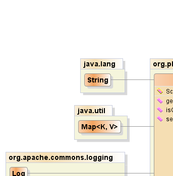
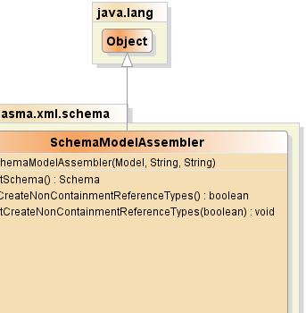
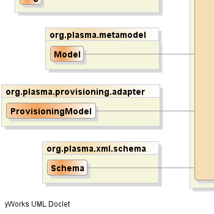
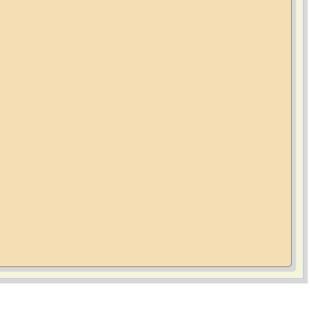

public class SchemaModelAssembler
extends java.lang.Object
org.plasma.query.PathNode,
org.plasma.query.PathNode#getSelectClause,
Select|  |  |
|  |  |
| Constructor and Description |
|---|
SchemaModelAssembler(Model model,
java.lang.String destNamespaceURI,
java.lang.String destNamespacePrefix)
Creates and XML Schema model based on the given PlasmaSDO#8482;
Provisioning Model.
|
| Modifier and Type | Method and Description |
|---|---|
Schema |
getSchema() |
boolean |
isCreateNonContainmentReferenceTypes() |
void |
setCreateNonContainmentReferenceTypes(boolean createNonContainmentReferenceTypes) |
public SchemaModelAssembler(Model model, java.lang.String destNamespaceURI, java.lang.String destNamespacePrefix)
model - the PlasmaSDO#8482; Provisioning ModeldestNamespaceURI - the target namespace URIdestNamespacePrefix - the target namespace prefixorg.plasma.provisioning.Sequencepublic Schema getSchema()
public boolean isCreateNonContainmentReferenceTypes()
public void setCreateNonContainmentReferenceTypes(boolean createNonContainmentReferenceTypes)
PlasmaSDO™ and PlasmaQuery™ are trademarks of TerraMeta Software, Inc. Copyright © 2011 - All Rights Reserved.